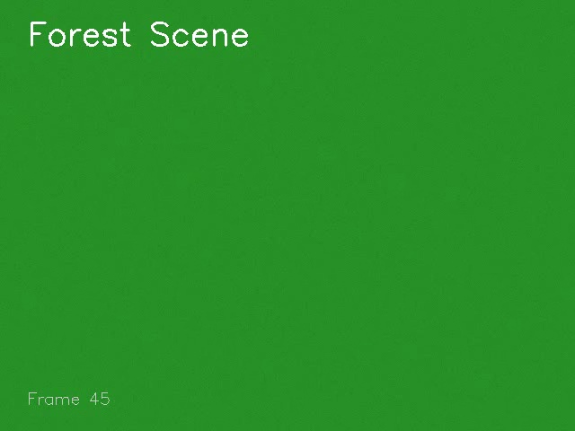
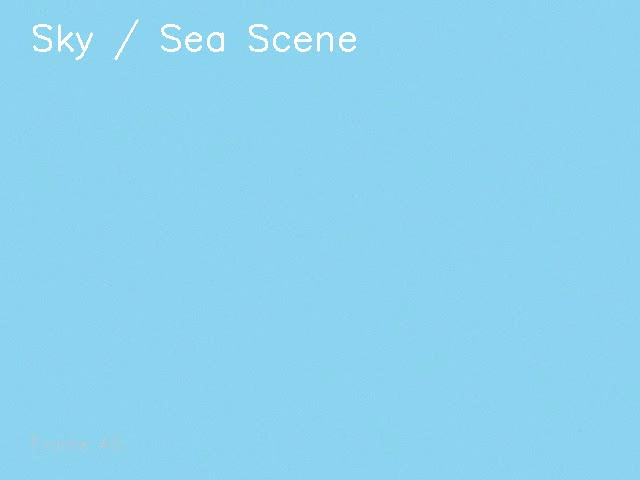
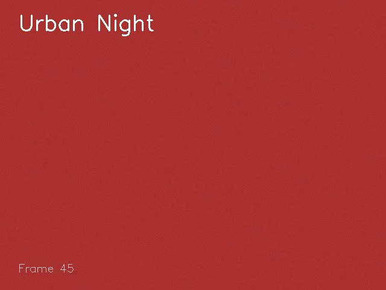
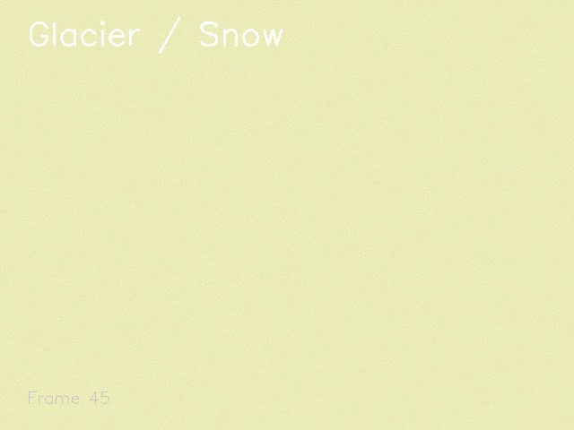
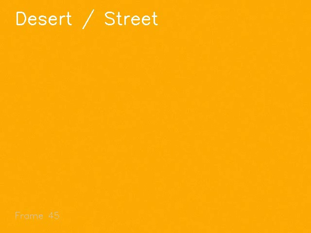
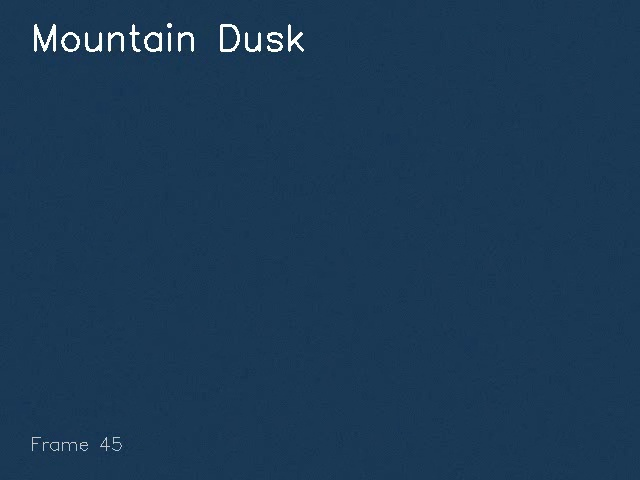

🎬 Video Scene Analysis Report
synthetic_test — 0:00:09 processing time
6
Total Shots
18.0s
Duration
3.0s
Avg Shot Length
3.0s
Shortest Shot
3.0s
Longest Shot
📐 Video Timeline
S0
S1
S2
S3
S4
S5
Shot 0
0.0s → 3.0s (3.0s)

buildings
47.1%
"a green background with the words ' forest scene '"
Top Predictions
buildings
47.1%
forest
34.1%
glacier
13.4%
Shot 1
3.0s → 6.0s (3.0s)

buildings
50.5%
"a blue sky with the words sky and sea on it"
Top Predictions
buildings
50.5%
glacier
30.1%
sea
13.6%
Shot 2
6.0s → 9.0s (3.0s)

glacier
56.6%
"an image of a red background with the words urban night"
Top Predictions
glacier
56.6%
buildings
19.9%
sea
17.8%
Shot 3
9.0s → 12.0s (3.0s)

glacier
36.0%
"a yellow background with the words glei snow"
Top Predictions
glacier
36.0%
buildings
28.3%
forest
19.8%
Shot 4
12.0s → 15.0s (3.0s)

glacier
91.6%
"a yellow background with a white text that reads, ' ' ' ' ' ' ' ' ' ' ' ' ' '"
Top Predictions
glacier
91.6%
buildings
5.0%
sea
2.6%
Shot 5
15.0s → 18.0s (3.0s)

glacier
63.8%
"a dark blue background with a white border and a white border in the center"
Top Predictions
glacier
63.8%
buildings
19.3%
sea
15.6%